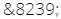

| général | ||
|---|---|---|
| ALT+0160 | espace insécable | |
| ALT+0150 | – | tiret demi‑cadratin |
| ALT+0151 | — | tiret cadratin |
| ALT+0183 | · | point médian |
| langue allemande | ||
| ALT+225 | ß | Esszet |
| AL+0132 | „ | guillemets allemands ouvrants |
| ALT+0148 | ” | guillemets allemands fermants |
| langue française | ||
| ALT+0171 | « | guillemets français ouvrants |
| ALT+0187 | » | guillemets français fermants |
| ALT+0156 | œ | e dans l’o |
| ALT+0230 | æ | e dans l’a |
| ALT+144 | É | e accent aigu majuscule |
| ALT+183 | À | a accent grave majuscule |
| ALT+128 | Ç | c cédille majuscule |
| ALT+137 | ‰ | pour mille |
À propos de l'espace insécable
La combinaison de touches pour l'espace insécable n'est parfois pas prise en compte par certains outils de TAO et certains CMS.
- En TAO : rechercher la fonctionnalité propre au logiciel utilisé.
- En CMS : ajouter l'espace insécable directement dans l'éditeur HTML.
Le caractère HTML "espace insécable" (non-breaking space) est : 
L'espace fine insécable peut être préférée à l'espace insécable traditionnelle, en particulier pour les signes de ponctuation française à caractère double hors ":" (! ? ; % ‰ « ») et pour les nombres (chiffres regroupés par trois en général, et pour les nombres de 4 chiffres seulement, pour lesquels elle est recommandée).
Mais l'espace fine insécable n'existe pas sur les claviers d'ordinateur traditionnel, seulement sur les claviers bépo. Il est possible en revanche de l'insérer directement en HTML : 